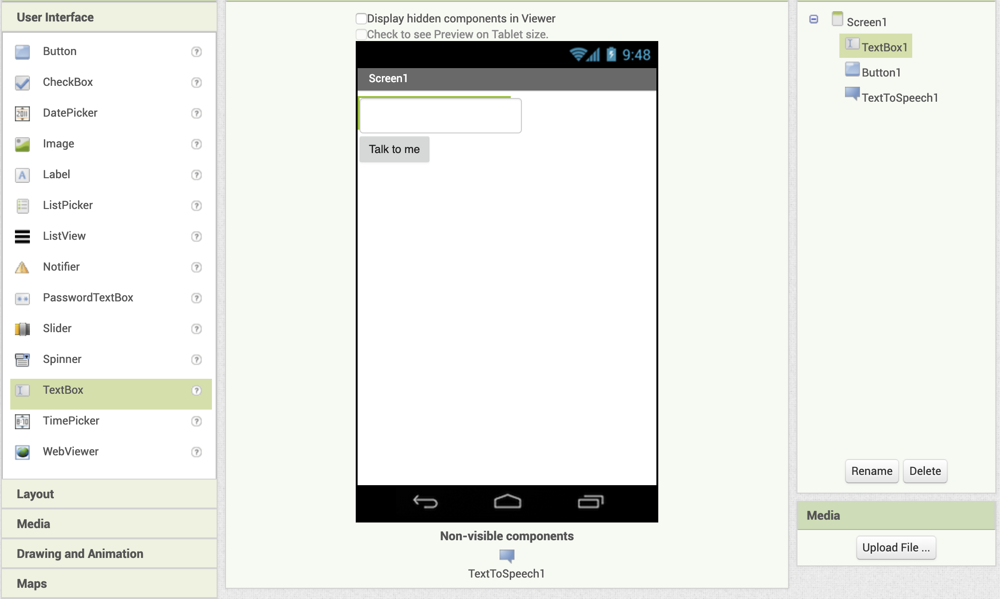

Tutorial 5: Talk to me

Objetivo:
El objetivo de este tutorial es mostrar cómo el comportamiento de la aplicación puede ser lanzado desde diferentes tipos de eventos. Cuando un botón sea pulsado, pase una cantidad de segundos determinada o se agite el dispositivo el móvil empezará a hablar.
Pasos a Seguir
1. Acceso al Entorno
-
Abrir el entorno de desarrollo App Inventor.
- Accede a la siguiente dirección: https://appinventor.mit.edu/
- Pulsa el botón create app!
- Selecciona una cuenta de Google
- Acepta los términos y condiciones (solo la primera vez que se accede a la plataforma)
↧
2. Creación de un proyecto nuevo
- Pulsa el botón “Start new proyect” y pon de nombre al proyecto "Talk_to_me"
↧
3. Replica la interfaz de usuario
- Arrastra los componentes desde el lateral izquierdo para replicar la interfaz de usuario.

↧
4. Añada voz a la aplicación
- Arrastra el componente no visual "TextToSpeech" a la interfaz de usuario.

↧
5. Defina la lógica de hablar tras pulsar el botón
- Defina la siguiente lógica cuando sea pulsado el botón.

↧
6. Añada el acelerómetro a la aplicación
- Arrastre el sensor de acelerómetro desde el lateral izquierdo a la aplicación

↧
7. Implementar la lógica cuando el móvil es agitado
- Implemente una lógica que se ejecute cuando el sensor detecta que el móvil está siendo agitado. La lógica deberá hacer que el móvil se queje.

↧
10. Compilación de la aplicación e instalación en el dispositivo
- Pulse el botón de Construir "Build" y seleccione proporcionar código QR para la aplicación QR
- Lea el código QR con su dispositivo Android y descargue la aplicación
- Si es la primera vez que instala una aplicación desde App Inventor es necesario permitir
al dispositivo móvil instalar aplicaciones de origen desconocido (es decir, aplicaciones fuera del
Google Play Store). Para ello:
- Si durante el primer intento de instalación le proporcione un acceso directo a Ajustes-> Seguridad seleccione instalar aplicaciones de origen desconocido
- Si tan solo le deniega la posibilida de instalar. Siga los siguientes pasos:
- Vaya a Ajustes de su dispositivo Android (Settings)
- Acceda a la opción de Seguridad
- Marque el checkbox de permitir instalaciones de origen desconocido
- Tras tener acceso a instalaciones de origen desconocido, intente instalar la aplicación de nuevo.